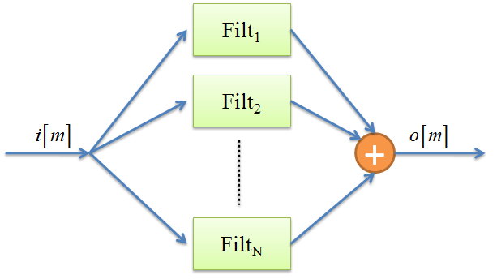

| LTPDA Toolbox™ | contents | |
|
A filter bank is a container object for collections of MIIR and MFIR filters. The filter bank object can be used to filter a discrete data series in parallel or in series, in accordance to the schematic representations of figures 1 and 2.
|  |

|
The LTPDA Toolbox allows the implementation of filter banks by means of the filterbank class.
The following example creates a parallel filter bank of MIIR filters.
iirhp = miir(plist('type', 'highpass'));
iirlp = miir(plist('type', 'lowpass'));
pl = plist('filters', [iirhp iirlp], ...
'type', 'parallel');
f = filterbank(pl)
The following example creates a serial filter bank of MIIR filters.
iirhp = miir(plist('type', 'highpass'));
iirlp = miir(plist('type', 'lowpass'));
pl = plist('filters', [iirhp iirlp], ...
'type', 'series');
f = filterbank(pl)
The following example creates a parallel filter bank of MIIR filters.
iirhp = miir(plist('type', 'highpass'));
iirlp = miir(plist('type', 'lowpass'));
pl = plist('type', 'parallel');
f = filterbank(iirhp,iirlp,pl)
The following example creates a serial filter bank of MIIR filters.
iirhp = miir(plist('type', 'highpass'));
iirlp = miir(plist('type', 'lowpass'));
pl = plist('type', 'series');
f = filterbank(iirhp,iirlp,pl)
The filterbank constructor also accepts as an input existing models in different formats:
XML files:
f = filterbank('foo_filterbank.xml')
MAT files:
f = filterbank('foo_filterbank.mat')
From repository:
f = filterbank(plist('hostname', 'localhost', 'database', 'ltpda', 'ID', []))
| |
FIR Filters | Applying digital filters to data | |
©LTP Team